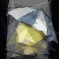

Genetic Algorithm and Image Evolution

Recently, I find a blog about how to use DEAP, a genetic programming library in Python, to find the magic number in the famous fast inverse square root algorithm. It seems that genetic algorithm is not too difficult and let’s play it on an old toy programming game.
The purpose is to use a certain number of triangles to approximate an image. A lot of works have been done on this in various programming languages. But let’s try it by hand and in Python.
The idea of genetic algorithm is repeatedly evolution on a population of DNA. Good DNA are kept and used to generate the next generation through crossover and mutation. In plain words, crossover is exchanging small parts between two DNA and mutation is random change on one DNA.
First, we need to import something:
from deap import base, creator, tools, algorithms
from PIL import Image, ImageDraw
...
Let’s fix some constants. The size of image is restricted to be 100x100. Each generation contains a population of 40 individuals. And the DNA of each individual is just a set of 50 triangles.
PIC = Image.open('head.jpg')
SIZE = 100
NUMBER_OF_TRIANGLES = 50
POPULATION = 40
NGEN = 10000
POLY = 3
We need gen_one_triangle() to generate one triangle in random position with random color and transparency.
def gen_one_triangle():
return (tuple([(randint(0, SIZE), randint(0, SIZE)) for i in xrange(POLY)]),
randint(0,255), randint(0,255), randint(0,255), randint(0,30))
With DEAP, we define some classes and the initial part:
creator.create("Fitness", base.Fitness, weights=(1.0,)) # maximize fitness
creator.create("Individual", list, fitness=creator.Fitness) # individual class
toolbox = base.Toolbox()
toolbox.register("attr", gen_one_triangle) # the above function
toolbox.register("individual", tools.initRepeat, # initialization of individual
creator.Individual, toolbox.attr, NUMBER_OF_TRIANGLES)
toolbox.register("population", tools.initRepeat, # initialization of population
list, toolbox.individual)
Now we should figure out how to evaluate the intermediate result (50 triangles). I draw them on an blank background and do pixel by pixel comparison with the origin image:
def triangles_to_image(triangles):
im = Image.new('RGB', (SIZE, SIZE), (255, 255, 255))
for tri in triangles:
mask = Image.new('RGBA', (SIZE, SIZE))
draw = ImageDraw.Draw(mask)
draw.polygon(tri[0], fill=tri[1:])
im.paste(mask, mask=mask)
del mask, draw
return im
def evaluate(im1, t2):
im2 = triangles_to_image(t2)
pix1, pix2 = im1.load(), im2.load()
ans = 0
for i in xrange(SIZE):
for j in xrange(SIZE):
a1, a2, a3 = pix1[i, j]
b1, b2, b3 = pix2[i, j]
ans += (a1 - b1) ** 2 + (a2 - b2) ** 2 + (a3 - b3) ** 2
return 1 - (1. * sqrt(ans) / sqrt(SIZE * SIZE * 3 * 255 * 255)),
toolbox.register("evaluate", partial(evaluate, PIC))
For crossover we use the default function in DEAP to work on sequences. And we define a mutate function to change position or color of one triangle in individual. (That function is a bit long and boring. Let’s skip it …) We also use the default select function in DEAP. Register them:
toolbox.register("evaluate", partial(evaluate, PIC))
toolbox.register("mate", tools.cxTwoPoint) # crossover
toolbox.register("mutate", mutate) # mutation
toolbox.register("select", tools.selTournament, tournsize=3)
Finally, in the main function we just call the algorithm function in one line.
def main():
pop = toolbox.population(n=POPULATION)
hof = tools.HallOfFame(1)
stats = tools.Statistics(lambda ind: ind.fitness.values)
stats.register("std", numpy.std)
stats.register("max", numpy.max)
stats.register("avg", numpy.mean)
stats.register("min", numpy.min)
try:
pop, log = algorithms.eaSimple(
pop, toolbox, cxpb=0.5, mutpb=0.1, ngen=NGEN, stats=stats,
halloffame=hof, verbose=True)
finally:
open('result.txt', 'w').write(repr(hof[0]))
triangles_to_image(hof[0]).save('result.bmp')
The picture in the head of this blog is generated through 10,000 generations within sevaral hours.
The full source code is here. Feel free to play with it.